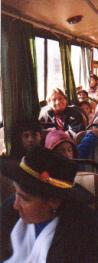
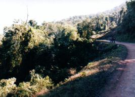
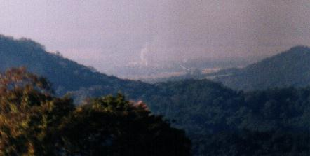
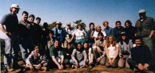
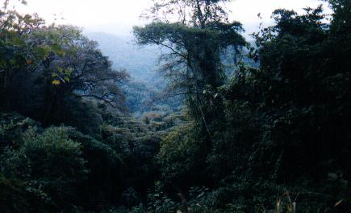

Martes 25 a las 8:00 Otra vez la misma rutina matinal. Vestirse dentro del tambor horizontal y salir por la puerta de carga frontal. Desayunar y volver a la carpa para buscar enseres. Las palas de nuestro imaginario lavarropas nuevamente se ponían a revolver prendas en busca de artículos vitales para la salida de hoy. Rollo de fotos, cantimplora, gorro. Estaríamos afuera por todo el día, así que teníamos que llevar el alimento en la mochila, y había que encontrar ese tenedor rebelde que se escabullía por el piso de la carpa. Finalmente todo estaba listo. ¿Otra vez a subir la cuesta hasta el Mirador? ¡NO! Esta vez había que recorrer la nada despreciable distancia de 13 kilómetros, siempre cuesta arriba, hasta el paraje denominado "Mesada de las Colmenas", subiendo desde los 550m hasta los 1.150m, es decir 600m de ascenso. En realidad había dos alternativas: subir a pié o subir en colectivo. No tuve dudas al tomar mi decisión. ¿Y los demás? Más allá de las valerosas proclamas que había oído en las recientes conversaciones del grupo, destacando los principios altivos del campamentista, casi todos se preparaban para enfilar secretamente hacia la parada del vehículo - salvo honrosas excepciones que aceptaron, y cumplieron, con el desafío de caminar. Y el vehículo llegó: un destartalado colectivo. Su interior delataba que, otrora, había conducido pasajeros por las calles de alguna ciudad pituca. ¿Barrios porteños, tal vez? ¡Cuántos habrán viajado a su trabajo en esto! Encima del parabrisas, cruzando de un extremo al otro, portaba aún aquel típico espejo de vidrio común, de silueta recortada artísticamente al estilo del filete, y biselado en todo su contorno. Marcado por diversas roturas mal cicatrizadas, ese espejo hablaba de épocas mejores. Hoy sería ciertamente reprobado por los códigos de seguridad. Pero lo más notable eran los ocupantes. Todos eran gente de la zona, de pieles cobrizas y curtidas, fisonomías características, y muchos luciendo vestimentas típicas, en particular las mujeres. Subimos en masa. En el más clásico estilo urbano, tuvimos
que corrernos al fondo del pasillo para que podamos entrar todos. ¡Por
suerte hubo lugar!  Tuve la suerte de conseguir un asiento. No sólo me permitiría ver el paisaje, sino también charlar con un personaje local. Comencé a hablar con la señora que estaba contra la ventanilla. Bastante mayor, de tez muy sufrida, pero con disposición vivaz, me comentó que era viuda, y también huérfana de ambos padres desde muy chiquita. A corta edad su abuelo la mandaba a recorrer, sola, grandes distancias entre los pueblos de montaña, y le indicaba que jamás debía temer al tigre - es decir, el Yaguareté. No la tocaría. Me contó que aún lo cazan cuando ataca el ganado. Sus hijos habían hecho escuela, y ella tenía cobertura médica. Hablamos de la selva, y me contaba de lo hermoso que era a mayor altura. Pero entre sus comentarios destaco en especial los siguiente: me decía que la gente conocía que ahora no había que matar animales ni cortar el bosque. Y no era solamente por que la ley había convertido las Serranías de Calilegua en un Parque Nacional. Lo que me estaba diciendo esta humilde señora, en sus palabras, es que ahora había localmente una verdadera conciencia conservacionista, que todos respetaban y custodiaban. Creo que luego agregó "... salvo el turista".El paisaje era hermoso: montañas cubiertas de selva verde. Pero por momentos el viaje dejaba de ser un paseo idílico para convertirse en una experiencia escalofriante, más parecida a una vuelta en montaña rusa. Mirando por la ventanilla de mi lado, y tras la silueta típica de mi acompañante, veía como, con el avance del colectivo, el costado elevado del camino se iba nivelando, para luego convertirse en un precipicio escarpado. El camino no era muy ancho, pero el chofer no se preocupaba mucho en mantener el vehículo lejos de los bordes. Así que, desde mi óptica, sentía que las ruedas pasaban por el mismísimo borde del barranco, al ras del barroso precipicio. Tras casi media hora de avance cruzamos el lugar donde nacía el Sendero Tataupá. Media hora más tarde el colectivo se detuvo: otro vehículo estaba detenido en la ruta por rotura del acelerador. Más adelante, una moderna máquina niveladora, relucientemente nueva, nos demoró unos minutos. Estaba reparando una peligrosa zona barrosa. Pero finalmente llegamos a "Mesada". Cerca de la casa del guardaparques dejamos las mochilas, y comenzamos a quitarnos algunos abrigos. El día era esplendoroso, y ya hacía calorcito. Comenzamos a recorrer el camino buscando aves.  ¿Que tenía de particular Mesada que no teníamos cerca del camping? Para los ornitólogos, un elemento fundamental: la altura. Es que hay especies de aves cuyas poblaciones se ubican a determinados niveles altitudinales, y éstas serían hoy el blanco de nuestras observaciones.Recorrimos algunos centenares de metros, siempre por el camino de tierra, y aparecieron varias de las aves que buscábamos: por ejemplo la Monterita Ceja Canela o el Arañero Ceja Amarilla, nuevamente parientes cercanos de aves que se ven en Buenos Aires, pero aquí estábamos ante variedades específicas de las Yungas. A esta altura las selvas también eran más exuberantes. Ya dejaban de ser una mezcla con elementos de bosque chaqueño: estas eran las verdaderas Yungas. Las ramas de los arboles, siempre enmarañadas con lianas y enormes enredaderas, portaban ahora grandes bromelias de un metro de diámetro, y cantidades de epífitas o claveles de aire. Mirando hacia abajo, a gran distancia en dirección este, veíamos el ingenio Ledesma, a la vez artífice de creación del parque y destrucción de su entorno. Los cultivos de caña apenas se divisaban en el valle. Allí no estábamos viendo bosques ni selvas nativas, sino su reemplazo, la caña, cuya expansión avanza lentamente sobre las laderas de este paraíso. ¿Seguirá hasta llegar a los límites mismos del parque? ¿Podrán sobrevivir los tapires, pumas y yaguaretés cuando el parque quede aislado de otras áreas naturales?  El ingenio San Lorenzo, apenas visible en la distancia Pasamos el resto de la mañana buscando aves, con la vista y los oídos sintonizados para captar todo pequeño movimiento. Pasamos grabaciones de audio de los cantos de algunas especies más difíciles, y en algunos casos respondieron al llamado, asomándose por entre la vegetación, lo que posibilitaba una observación. Estuvimos atentos a las rapaces todo el tiempo. Vimos un pequeño mamífero: una ardillita de intenso color marrón rufo. Permaneció inmóvil entre la vegetación el tiempo suficiente para que todos la podamos observar bien. ¡Era preciosa!  Luego volvimos a Mesada, donde almorzamos nuestro sandwich, tomamos nuestra bebida, y descansamos. Aquí, en el césped de acampe, bajo un sol radiante, tomamos una foto de todo el grupo. Vimos a las hermosas Urracas acercarse temerarias al tacho de basura. Divisamos un par de Jotes Reales en vuelos distantes. Y nos preparábamos para la larga vuelta de 13 kilómetros, a pie. Eso, si, por suerte era todo en descenso.A eso de las tres de la tarde comenzamos a partir en grupos por el camino de barro colorado que surcaba a media altura por las colinas. Sobre la izquierda: montañas altas con selva. Sobre la derecha: precipicios empinados con selva. En mi caso comencé caminando con un grupo, pero pronto me quedé solo, distraído por las aves. Buscaría ahora resolver personalmente los desafíos de identificación que la suerte iría presentando. Ya había tenido dos días de iniciación asistida, y había llegado el momento de largarme solo. Si veía un pajarito, trataría de identificarlo sin otra ayuda que lo indicado en mi Guía de Aves. Recorrí el camino chocho de la vida...  Este momento fue uno de los que más disfruté, a pesar de las inevitables frustraciones con que uno se topa cuando aún no tiene suficiente experiencia en el lugar. Conquisté muchas especies, pero algunos avistajes solo generaron duda, por lo fugaz, o por tratarse de casos con dos o más especies muy similares. También perdí de identificar a muchas aves por desconocer sus voces.Mientras seguía haciendo calor, cada tanto pasaba un auto o camión, y cada tanto se presentaba un pajarito. Yo iba último, y más de una vez pensaba que me había rezagado excesivamente: estaría tal vez dos horas detrás del anterior. Pero al girar una curva me topé con el grupo más nutrido: el guía, el telescopio, y todos los "prendidos" de siempre. Aproveché para observar con ellos un hermoso picaflor cometa, impresionante con su larga cola bermellón iridiscente. Pero luego dejé que se distancien, y así seguir resolviendo en soledad. Mi único problema eran los pies. Como mis zapatillas se habían mojado el día anterior, me había puesto hoy unas botas de goma. Las botas habrían sido mucho más útiles el día de ayer, claro, para caminar por los ríos, pero así eran las cosas. Hoy debía marchar 15 Km. con este calzado incómodo. Lo recuerdo bien: en los últimos kilómetros sentía mis pies como roca dura. Parecía que mis arcos habían cristalizado en un férreo calambre para resistir el peso. Visualizaba que mis huesos y tendones se habían convertido en el mecanismo de acero pulido que hacía de pie para el robot de Terminator 1. No tuve mucha suerte sacando fotos de aves, pero tuve la fortuna que se haya presentado ante mí, en el camino, un pequeño zorzal, llamado Zorzalito Overo. Ningún otro observador pudo registrar esta especie durante nuestra estadía en Calilegua. Finalmente, al desvanecerse la luz del día, los integrantes nos fuimos aglutinando, y llegamos casi juntos al campamento, ya de noche, y con hambre. ¿Y Facundo? No estaba. A la mañana había tomado el micro con nosotros, pero cuando llegamos a Mesada había continuado a bordo, junto a su novia, para realizar un extenso pero interesante recorrido por los pueblos de altura. ¡No había vuelto a tiempo para cocinar! Asi que desde ese día existen ornitólogos que saben pelar papas y hacer un buen puré, ideal acompañamiento para las suculentas hamburguesas a la parrilla. Tan deliciosa salió la cena, que, al llegar Facundo, tuvo que conceder un sincero elogio, mientras nos contaba de los majestuosos paisajes que conoció en su viaje: los pueblos construidos en las laderas, las selvas, montañas, campos, ríos y precipicios... * * * |